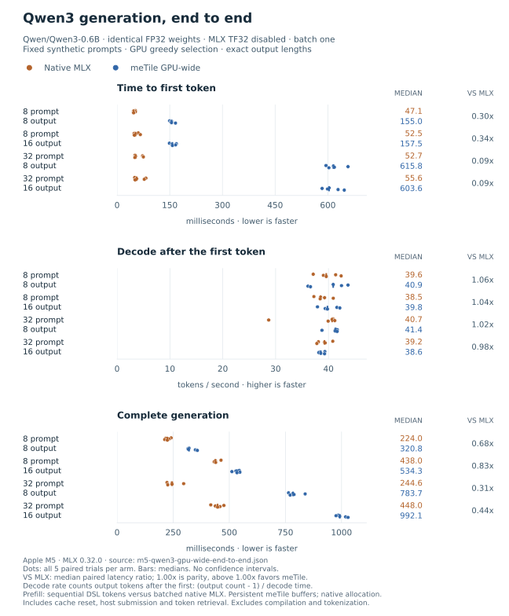
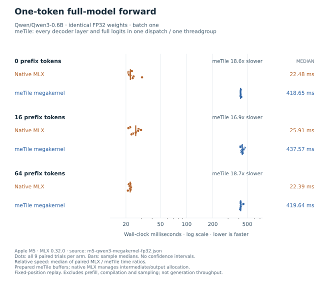

Megakernels¶
A model megakernel puts a complete token-to-logits forward pass in one GPU dispatch. It is not the same as a persistent GEMM, which still computes one matrix multiplication. The GPU-wide version below uses ordered, separate kernels instead of one persistent dispatch. Fewer launches can help, but only if the program still uses the GPU well.
The small-model prototype targets Qwen3-0.6B, not Qwen3.6. The Qwen3.6 collection lists 27B and 35B-A3B checkpoints; the latter has 35B total parameters, not 3B total. The 27B configuration mixes Gated DeltaNet with gated full attention. That requires a different decoder, not a model-name change in this implementation.
What runs in the DSL¶
The Qwen3-0.6B configuration defines 28 layers, hidden width 1024, intermediate width 3072, 16 query heads, 8 key/value heads, head dimension 128, and a tied 151936-token vocabulary. Query width is therefore 2048, not 1024.
The kernel source uses only meTile DSL
operations. Tensor views and scratch memory are declared before the computation.
One runtime loop iterates over all layers; the tied vocabulary projection is included.
token ID -> embedding[151936, 1024]
repeat 28 times:
RMSNorm -> Q/K/V projections -> per-head Q/K RMSNorm -> RoPE
grouped-query attention + KV update -> output projection -> residual add
RMSNorm -> gate/up projections -> SwiGLU -> down projection -> residual add
final RMSNorm -> tied vocabulary projection -> logits[151936]
Weights, cached keys/values, logits, and intermediate storage boundaries use the selected FP16 or FP32 dtype. Reductions accumulate in FP32. The host packs the original weights and precomputes rotary constants; it does not run any layer arithmetic for the meTile forward pass. This is inference-only: it does not provide a fused backward pass or replace the general MLX model integration.
Single-threadgroup execution¶
The prototype launches one threadgroup, reusing 24 KiB of FP32 scratch between layers. Current-token keys and values stay in that scratch until all query heads have consumed them. Attention reads only earlier positions from the device cache; cache writes become inputs to the next ordered dispatch. No threadgroup spins waiting for another threadgroup to become resident.
This implementation prioritizes correctness over speed. A single threadgroup leaves most of the GPU idle. The staged implementation below distributes projections across the GPU without unsafe grid-wide barriers. The fewest dispatches need not give the lowest latency.
GPU-wide end-to-end generation¶
The staged kernels distribute
matrix rows across threadgroups: one SIMD group computes each output row.
With 256 threads per group, the vocabulary projection launches 18,992
threadgroups, rather than making one group compute the whole model.
Q/K normalization and attention distribute work across heads. RMSNorm still
uses one group; this does not mean every operation saturates the GPU.
Each layer has eight ordered stages: input RMSNorm, QKV projection, Q/K normalization with RoPE and cache writes, attention, output projection with residual, post-attention RMSNorm, gate/up projection with SwiGLU, and down projection with residual. Explicit device buffers connect them. Dispatch boundaries order dependent reads and writes; there are no host waits between these stages and no cross-threadgroup spin barriers.
A complete token-to-logits forward uses 227 dispatches. Two more
DSL argmax kernels select the
next token on the GPU, breaking ties by lowest token ID. Reading that ID
synchronizes before the host updates the next token and position. This is
GPU-wide staged execution, not a single-dispatch megakernel.
This benchmark measures actual generation: prompt tokens go in, generated token IDs come out, and both KV caches advance at every step. On the same M5, with FP32 weights, activations and caches and MLX TF32 disabled:
Prompt / output tokens |
Native MLX median |
meTile median |
Median paired speedup |
|---|---|---|---|
8 / 8 |
223.98 ms |
320.78 ms |
0.685x |
8 / 16 |
437.97 ms |
534.30 ms |
0.827x |
32 / 8 |
244.59 ms |
783.74 ms |
0.311x |
32 / 16 |
447.97 ms |
992.13 ms |
0.441x |


Decode is near parity, but total generation is slower. After the first token, meTile reaches 38.6–41.4 tokens/s versus MLX’s 38.5–40.7 tokens/s. Median paired decode speedups range from 0.979x to 1.057x; these short runs do not establish a consistent win. Prefill remains the clear gap: meTile processes prompt tokens sequentially, while MLX batches all but the last prompt token. MLX also skips unused final-layer output work when only the prefix cache is needed. The candidate still computes the full decoder body, omitting only final normalization and vocabulary projection on those prefix tokens. The chunked implementation below replaces this tokenwise prefill with batched projections; it does not change these recorded results.
The FP32 end-to-end report contains all
40 timed generations and 124 full-state validation steps. Every logit,
every valid K/V entry across all 28 layers, and every greedy token passes.
Maximum absolute differences are below 5e-5 for logits and 5.8e-4
for cache entries, with fixed rtol=atol=0.001. Every warmup and timed
generation also returns the exact expected token sequence and count.
The GPU-wide FP16 validation report still fails
the cache check at the second prompt token: maximum absolute cache error is
0.125 against rtol=atol=0.02. Its logits and greedy token pass, but
that is not enough. There are no FP16 performance numbers for this path.
Timing starts at cache reset or construction and includes prefill, decoder
work, vocabulary projection, GPU argmax, host token retrieval, and dispatch
and synchronization overhead. Post-first-token decode covers output_count - 1
forwards, not the whole output count. EOS is ignored on both sides so each
trial produces exactly the requested number of tokens.
These are warmed, batch-one runs with fixed synthetic token IDs. They do not measure text serving or cold starts. Loading, weight packing, rotary-table setup, compilation, tokenization and text decoding are excluded. meTile reuses prepared intermediate/output buffers; MLX manages its allocations inside timing. The report records these differences, all raw samples, source hashes, and checkpoint hashes. The adapter currently keeps the small-model shape restrictions of the original prototype; it is not a general Qwen backend.
MLX_ENABLE_TF32=0 python3 -m benchmarks.megakernels.qwen3_end_to_end \
--model Qwen/Qwen3-0.6B --dtype float32 \
--prompt-lengths 8 32 --output-lengths 8 16 --trials 5 \
--output /tmp/qwen3-gpu-wide-end-to-end.json
The small-model GPU regression checks do not need a downloaded checkpoint. Disable TF32 before starting Python so the native batched-prefill reference also uses full FP32; otherwise those FP32 cases are skipped.
MLX_ENABLE_TF32=0 python3 -m pytest \
tests/kernels/test_qwen3_staged_runtime.py \
tests/kernels/test_qwen3_staged_precision.py \
tests/kernels/test_qwen3_selection.py -q
Chunked prefill for long prompts¶
Chunked prefill processes several token rows from one request together. Request batch size stays one: a chunk of 256 means 256 consecutive prompt positions, not 256 independent sequences. Each position still attends to its entire causal prefix, including earlier chunks. Chunk boundaries are not attention windows.
The projection kernel
expresses ordinary tiled matrix multiplication in the DSL. The compiler
lowers these operations to Metal SIMD-group matrix instructions; the kernel
does not embed handwritten Metal. The default preparation uses
64 x 64 x 32 projection tiles with FP32 accumulation.
The benchmark adapter transposes and packs
weights once, outside timing, then reuses them across chunks.
Projection |
Input |
Packed weights |
Output |
|---|---|---|---|
QKV |
|
|
|
Attention output |
|
|
|
Gate and up |
|
|
|
Down |
|
|
|
The row and attention kernels handle
normalization, RoPE, causal attention, SwiGLU and residual addition. Explicit
buffers connect 11 ordered stages per layer. Padding rows are zeroed and
never written to the cache. Only the final valid prompt row reaches the
vocabulary projection; subsequent generated tokens use single-token decode.
Token/control updates synchronize between chunks, not between every layer stage.
Within one prefill call, nonterminal chunks skip the final layer’s eight
stages after its K/V write. Those hidden outputs are unused; all cache entries
remain available to later tokens. The terminal chunk runs the complete layer.
Chunk capacity can be set from 1 through 4096 tokens; larger capacities need
more batch scratch and do not necessarily run faster.
The earlier query-tiled prefill attention
shares each K/V tile across several query rows. With 256 threads, a threadgroup
handles eight rows, one per SIMD group. A tile of 16 keys and values at head
dimension 128 occupies 16 KiB of FP32 shared memory. Each query maintains
eight independent online softmax states in registers, shortening accumulation
chains. The final merge rescales these partitions to a common maximum and
adds adjacent pairs in an FP32 reduction tree. Causal masks still exclude
future positions.
Single-token decode retains the separate key-parallel attention path.
Long-position agreement also depends on arithmetic order. RMSNorm accumulates
four contiguous values per lane before SIMD reduction and uses a precise
reciprocal square root, following MLX v0.32.0’s
RMSNorm kernel
and four-value setting.
The DSL rotary-table kernel runs during
untimed setup, preserving the FP32 frequency/position operation order and
exp2 followed by fast sine/cosine used in
MLX v0.32.0 RoPE.
These choices target numerical agreement at long positions; the full logits
and cache checks still define compatibility, not a bitwise-equivalence claim.
That scalar path is not FlashAttention-2. It reuses K/V data across query rows without materializing a prompt-length-squared score matrix, but score and value products still use scalar/SIMD arithmetic, not matrix instructions. FlashAttention-2 combines matrix tiling with online softmax and partitions query rows across warps to reduce communication. See the FlashAttention-2 paper and the author’s explanation.
Chunking is also distinct from multi-request scheduling. Sarathi-Serve combines chunked prefills with ongoing decodes to manage serving latency and throughput. This adapter processes one request; it does not implement that scheduler or establish a serving-throughput result.
Matrix-tiled attention¶
The matrix-attention kernel
uses Schedule(backend="simdgroup_inline") to compose QK and PV matrix
products, online softmax and explicit barriers in one DSL program. Tensor
shapes, shared allocations and strides stay at the top level. The compiler
checks bounds, uniform control flow and shared-memory transitions; it does
not substitute a Qwen-specific Metal template or expose fixed matrix-fragment
lane coordinates. See Execution Schedules and Fusion for the general API.
The configured layout gives each of four SIMD groups eight query rows. A threadgroup processes 32 queries against 16 keys at a time. The current path loads Q/K/V matrix fragments directly from bounded device tensor views and stores the result directly, retaining Q fragments in registers. At head dimension 128 it uses 4 KiB of shared memory: 2 KiB for scores, 1 KiB for row factors and 1 KiB of explicit scratch for masked device tiles. Logical tensor extents exclude future cache slots, even when the physical allocation is larger. The compiler separates proven full tiles from guarded tails; the kernel does not assume an opaque matrix fragment’s lane mapping.
The earlier shared-storage path used 19 KiB, caching Q before reusing its
allocation for staged K/V. Its report and figure remain available below.
Both paths keep running maxima, denominators and output fragments in registers,
with adjacent-pair subgroup reductions preserving the reference reduction
tree. Explicit barriers still protect the shared bridge between scalar
softmax and matrix products.
Scaling happens after the QK product, followed by explicit fast_exp2
calls, as in
MLX’s attention kernel.
The denominator update uses metile.fma with one rounding; output fragments
are divided directly by the denominator. These operations are explicit DSL
instructions, not global fast-math or reduced-precision accumulation.
Mathematically equivalent rewrites can change accumulated FP32 rounding, so
the full-model logit and cache tolerances remain unchanged.
This follows the tiled online-softmax approach described in FlashAttention-2, without materializing a full score matrix. It does not depend on newer cooperative-tensor input reuse: Apple’s TensorOps guidance distinguishes that API from the shared-memory round trip available on macOS 26. The measured machine runs macOS 26.2.
Projections use the existing DSL GEMM with tensor_ops and a 64 x 64 x 64
tile. Strict math is enabled and relaxed precision is disabled. The native
baseline disables TF32, following
MLX’s full-precision dispatch rule.
This configuration also uses explicit FMA in RMSNorm and RoPE, and fast_exp
in prefill SwiGLU, matching the native rounding choices. The RMSNorm/RoPE
choice applies during decode too; the scalar-attention baseline keeps its
earlier row arithmetic. This is a whole-backend comparison, not a timed
attention-only ablation.
Single-token decode still uses the earlier key-parallel path.
The long-document benchmark uses 4,096 prompt tokens and exactly 1,024
generated tokens. A separate 2,048-token document with eight output tokens
selects among chunk sizes 128, 256, 512 and 1024. Both phases use five paired
trials, with distinct document sources and a correctness gate before timing.
Here, held-out means excluded from chunk-size selection, not unseen during
implementation development. Native MLX is the unmodified model in a synchronous
greedy loop, not the pipelined mlx_lm.stream_generate implementation.
The chunked-prefill methodology defines
the validation, timing boundaries and reproduction command.
Lossless decode-weight storage¶
The current chunked adapter can store decode projection weights more compactly without changing their values or arithmetic precision. FP32 weights converted from BF16 have zero low 16 bits. Setup checks the actual embedding and layer weight buffers for finite values, even element counts and that bit pattern, then verifies a bitwise round trip. Ineligible buffers keep ordinary FP32 storage; a mismatch while verifying the packed copy aborts preparation.
Eligible weights use one uint32 for each pair of values. The
staged DSL kernels reconstruct each
original FP32 bit pattern with shifts and metile.bitcast before the
existing FP32 products and reductions. This is lossless storage, not
quantization or BF16 matrix arithmetic. It covers decode projections and
the vocabulary projection, including the first output token’s head.
Prefill matrix weights, activations, KV cache and accumulation remain FP32.
Native MLX remains an unmodified FP32 baseline with TF32 disabled. The two backends therefore use the same weight values but different physical storage for those candidate operations, not a native-BF16 comparison. Original FP32 buffers remain allocated for other stages: halving the packed weight payload does not halve total model memory. Packing is outside timing; reconstruction is inside the measured kernels. The report records both byte counts, storage scopes and verification results. Model-level logit, cache and token gates remain unchanged. The latest report below exercises this path; older reports retain their original storage configuration and measurements.
Measured long-document generation¶
On the Apple M5 with 32 GB memory, meTile wins complete generation, but not prefill, in this run. Native MLX uses unpacked FP32 weights with TF32 disabled; meTile’s decode projections and vocabulary head use the lossless packed storage described above. Weight values, activations, KV cache and accumulation remain FP32, but physical weight storage differs. Chunk size 512 won the separate 2,048-input/eight-output tuning sweep; all four sizes passed validation. The selected backend then passed all 1,024 greedy-token and full-vocabulary logit checks on the 4,096-token document, along with the required K/V checks across all 28 layers.
Metric |
MLX model loop median |
Chunked meTile median |
Median paired speedup |
|---|---|---|---|
Time to first token |
2.360 s |
6.955 s |
0.971x |
Decode after the first token |
41.767 s |
25.942 s |
1.655x |
Complete generation |
44.127 s |
32.897 s |
1.494x |
Post-first-token throughput is 24.49 tokens/s for MLX and 39.43 tokens/s for meTile, using 1,023 advancing forwards. Latencies are independent medians; their components need not sum to the total median. Speedups are medians of paired trial ratios, not ratios of the displayed medians.

All five trials are retained, with no outlier exclusion. Complete-generation times range from 35.94–61.97 s for MLX and 27.34–41.47 s for meTile; TTFT spans 1.95–9.47 s and 2.24–9.76 s, respectively. meTile wins all five complete-generation and decode pairs, but only two TTFT pairs. The paired TTFT ratio near one does not establish parity: the candidate’s median TTFT is higher and the five samples vary widely. This is one noisy session and one document, not a general model-speed guarantee or a fastest-prefill result. Timing does not isolate direct-memory attention from lossless packing, and vocabulary-head packing also affects the first token.
All 50 timed generations match their validated token sequences and exact
counts, totaling 10,560 output IDs across tuning and held-out trials. Across
both phases, validation covers 38 complete chunk-boundary cache checks,
1,056 full-vocabulary logit/cache/greedy checks and five whole-prompt replays.
Maximum absolute logit and cache differences are 0.000337 and 0.001427.
They pass the unchanged combined relative/absolute rtol=atol=0.001 checks;
that is not an absolute-error-only or bitwise-equivalence claim.
The raw report preserves
every trial, token ID, correctness result and source fingerprint.
The benchmark source and
methodology specify setup exclusions,
cache checks and the synchronous MLX baseline. These measurements do not
replace the recorded short-prompt and single-threadgroup results.
The earlier 19-KiB shared-storage report and
chart remain unchanged. With unpacked
FP32 weights, that session recorded median totals of 36.174 s for MLX and
32.656 s for meTile, with 1.108x median paired speedup. It predates
direct device tiles and lossless decode-weight packing. Different session
medians do not measure the isolated benefit of either change.

The earlier 27-KiB matrix-attention report
and chart remain available. That run
predates shared-storage reuse, final-layer pruning and buffer-lifetime fixes,
and selected a different chunk size. Comparing session medians does not
isolate any one optimization.

Scalar-attention baseline¶
The earlier configuration used scalar/SIMD attention, 64 x 64 x 32
SIMD-group projections and chunk size 1024. Median TTFT was 5.781 s for
meTile versus 1.993 s for MLX; complete generation was 36.720 s versus
34.280 s. Its median paired speedups were 0.347x for TTFT, 1.064x for
decode and 0.949x overall.
The scalar-attention report and
original chart remain unchanged.
The lower TTFT in the matrix report is encouraging, but the two sessions
also differ in projection backend, row arithmetic and selected chunk size.
Dividing their medians is not a paired attention-kernel speedup.

Single-threadgroup baseline¶
On Apple M5 with 32 GB memory, MLX 0.32.0 and MLX-LM 0.31.3, the matched FP32 experiment passes validation but is 17–19 times slower than native MLX. Each row contains nine alternating paired trials of one complete token-to-logits forward pass. TF32 is disabled for MLX.
Prefix tokens |
Native MLX median |
meTile median |
Median paired speedup |
|---|---|---|---|
0 |
22.48 ms |
418.65 ms |
0.054x |
16 |
25.91 ms |
437.57 ms |
0.059x |
64 |
22.39 ms |
419.64 ms |
0.053x |


The FP32 report includes every timing
sample and all nine autoregressive validation steps. Greedy tokens agree;
maximum absolute errors are below 1.2e-5 for logits and 7.6e-4 for
cached keys/values, against fixed rtol=atol=0.001 checks. This is an
FP32-to-FP32 comparison, not a measurement of native FP16 generation speed.
FP16 is not validated for the full model. It passes the small-model and
primitive tests but fails the real checkpoint’s KV-cache checks at the second
decode step. The FP16 failure report preserves
that result; no FP16 timings are published. Matching the checked next tokens
does not satisfy the full-state correctness requirement.
Fixed-context methodology¶
Both backends use the same checkpoint and selected dtype, batch size one, the same prefix cache, and the full vocabulary projection. Before timing, the driver checks every logit and valid K/V entry over three autoregressive steps per context, including exact greedy-token agreement. Numerical tolerances and observed errors are saved with the results. If a check fails, the benchmark writes a failure report and stops the run without publishing timings.
Each timing trial repeats one token at a fixed cache slot. Backend order alternates, and speedup is the median of paired MLX/meTile wall-time ratios. Loading, compilation, packing, prefill, tokenization, and sampling are excluded. The meTile arm reuses prepared buffers; native MLX includes graph construction and framework-managed intermediate/output allocation. Native cache capacity is warmed before timing and must not grow during measurement.
These timings are decode-forward latency, not prefill speed, generated tokens per second, or end-to-end chat latency. The benchmark records all raw trials, checkpoint hashes, and source fingerprints. It only loads locally cached weights and never silently downloads a model.
python3 -m pip install -e '.[mlx-lm,benchmarks]' -e ./kernels
MLX_ENABLE_TF32=0 python3 -m benchmarks.megakernels.qwen3 \
--model Qwen/Qwen3-0.6B --dtype float32 --contexts 0 16 64 --trials 9 \
--output /tmp/qwen3-megakernel.json
For the rest of the measured workloads, see Benchmarks.